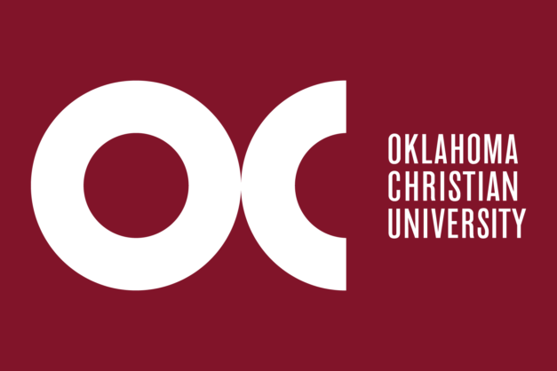

COMPUTER SCIENCE
AT OKLAHOMA CHRISTIAN
Gain hands-on experience in labs, solve business problems in
internships and learn key data structures so you can deliver the
code that works; led by professors with over 90 years of combined
industry experience.
Dual degrees in Computer Science allow students to pursue a Masters degree in combination with undergraduate studies. Save time and0 money by graduating with both degrees designed to fast track your career.
Dual degrees in Computer Science allow students to pursue a Masters degree in combination with undergraduate studies. Save time and0 money by graduating with both degrees designed to fast track your career.
